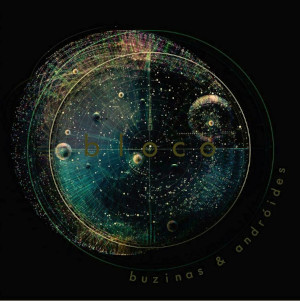
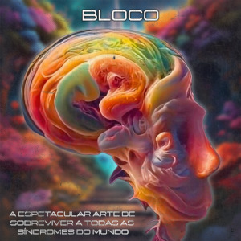

SOBRE A BANDA
A bloco é uma banda de rock alternativo onde a sonoridade flutua entre a suavidade do folk; a tensão de microfonias de guitarras e linhas melódicas de cordas e vocal. As letras são fotografias atemporais de toda beleza e degradação da sociedade. Em 2016 a banda lançou seu primeiro EP de forma independente, nomeado de Buzinas & Androides e com isso se apresentou em diversas cidades do estado do RS para divulgação do mesmo. Em seguida lançou no youtube os clipes das canções Humor e Buzinas e Androides, com este último alcançando 10k visualizações. A banda enfrentou um recesso de 2018 até 2021, retornando em meio à pandemia, entrando em processo de gravação de seu primeiro álbum, intitulado A espetacular arte de sobreviver todas as síndromes do mundo , trazendo canções de 10 anos atrás e também canções que foram compostas durante a pandemia e durante as gravações. Em 2024, a banda já lançou 2 singles que fazem parte do álbum, a primeira foi Coquetel Molotov e o último single, foi 10k volts.
A banda bloco é formada por:
Tiago Hermano (Guitarra e baixo)
Thiago Fandango (Bateria)
Rui Filho (Voz e guitarra)
MÚSICA
Discografia:
EP "Buzinas & Androides" (2016)
Álbum A espetacular arte de sobreviver a todas as síndromes do mundo (Lançamento em 2025)
CLIPES E LYRIC VÍDEOS
10k Volts (2024)
Coquetel Molotov (2024)
Manual de Boas Vindas (2022)
Buzinas & androides (2017)
APRESENTAÇÕES E OUTROS SINGLES
Coração de Carbono
Bons Ares
Velhos Sentimentos
AGENDA
Em breve, novas informações.
GALERIA DE FOTOS
CONTATO
Email: blocorock@gmail.com
(51) 996648879
(51) 985245928